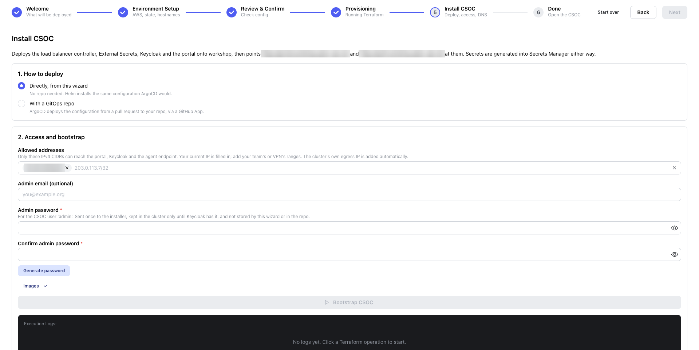

Bootstrap the CSOC
Choose who may reach the CSOC and set the administrator password, then install Keycloak, the CSOC portal and the services they need.
Goal
Fill in the Install CSOC form and press Bootstrap CSOC. The bootstrap stores the CSOC's secrets and installs everything that runs in the cluster.
Steps
- Under 1. How to deploy, choose Directly, from this wizard. The other choice, With a GitOps repo, needs a GitHub App and a repository and is not part of this tutorial.
- Under Allowed addresses, check the address the wizard filled in: your computer's current public address as a
/32range, for example203.0.113.7/32. Add every other range that needs to reach the CSOC, such as your campus or VPN outbound range, for example198.51.100.0/24. Only these addresses can reach the CSOC portal, Keycloak and the agent endpoint. The cluster's own outbound address (shown later as "Cluster egress IP") is added automatically. - Under Admin email (optional), enter the email you will sign in with, for example
jdoe@example.org. Do not leave it empty: you use the same email in the commons' user.yaml, and without it Keycloak asks for an email and a name at the first sign-in. - Press Generate password. It fills Admin password and Confirm admin password.
- Save the password in your password manager now.
- Open Images. For a test, leave API image and Frontend image empty, which runs the images set in
docker-compose.workshop.yml:quay.io/cdis/csoc-api:feat_csoc-bootstrap-wizardandquay.io/cdis/csoc-frontend:feat_csoc-bootstrap-wizard. The agent follows the API's tag. For real use, enter a release tag in both fields so that a restarted pod does not change version (see Images and pinning). - Press Bootstrap CSOC in the banner. The text under the form reads "Ready: press Bootstrap CSOC in the banner above." once every field is valid.
Done when: the log ends with === CSOC is applied === and the banner reads Bootstrapped; ready to finish.
Save the administrator password
The password is for the CSOC user admin. The wizard does not store it. The bootstrap writes it to the cluster as the Kubernetes Secret csoc-admin-bootstrap, Keycloak reads it once, and the finish deletes that Secret; after that only Keycloak holds it. If you lose it, see Reset the admin password.

Expected result
The log shows one === … === heading for each stage.
Time
About 5 minutes from Bootstrap CSOC to Bootstrapped; ready to finish; normal up to 10 minutes.
What's happening
The bootstrap connects to the new cluster and generates the CSOC's secrets (Keycloak's administrator login, the portal's client secret and session keys), storing them in AWS Secrets Manager. It finds the cluster's outbound address so that it can be allowed through the load balancer. Then it installs, in order, the controllers the CSOC relies on, Keycloak with its database, and the CSOC portal. The portal's load balancer is created at the end, open only to the allowed addresses.
- The runner connects to the cluster and waits for a node to be ready.
- It creates the CSOC's secrets in Secrets Manager, if they do not exist yet.
- It finds the cluster's outbound address.
- It stores the first administrator password for Keycloak to read once.
- External Secrets Operator, which copies secrets from Secrets Manager into the cluster.
- The AWS Load Balancer Controller, which creates load balancers for the cluster.
- external-dns, which will publish each commons' hostname in your zone.
- The EBS CSI driver, so that the cluster can create storage volumes.
- CloudNativePG, which runs Keycloak's PostgreSQL database.
- Keycloak and the CSOC sign-in realm,
csoc-realm. - The CSOC portal and its API, behind an internet-facing load balancer limited to your allowed addresses.
For namespaces, releases and the secrets involved, see What the bootstrap installs.
Troubleshooting
| What you see | What it means | What to do |
|---|---|---|
| Banner: The bootstrap failed | The environment is still applied, and the cluster is running. "The log below says what went wrong." | Read the last === … === heading in the log: the failing stage is the one under it. Fix the cause, then press Bootstrap again. It is safe to repeat, and it asks for the form again. |
| Banner: The bootstrap was stopped | Someone pressed Stop this run. "The log below shows where it stopped." | Press Bootstrap again. |
| Bootstrap CSOC is disabled, and the form says "Needs at least one allowed address and a confirmed admin password." | The form is incomplete. | Fill in Allowed addresses and both password fields; the password needs 12 or more characters. |
| A prompt to sign in again before the bootstrap starts | Less than 15 minutes are left on your SSO sign-in. | In a terminal, run the command shown. |
Log: WARNING: could not detect the cluster's egress IP | The check that finds the cluster's outbound address timed out. | Press Bootstrap again. Sign-in fails until that address is allowed. |
Log: another operation is in progress | An interrupted run left a Helm release locked. | Press Bootstrap again. The bootstrap rolls back or removes a locked release before it continues. |
| Banner: Waiting for pull request #N to be merged | You chose With a GitOps repo. The configuration waits in a pull request. | Press Open the pull request and merge it. |